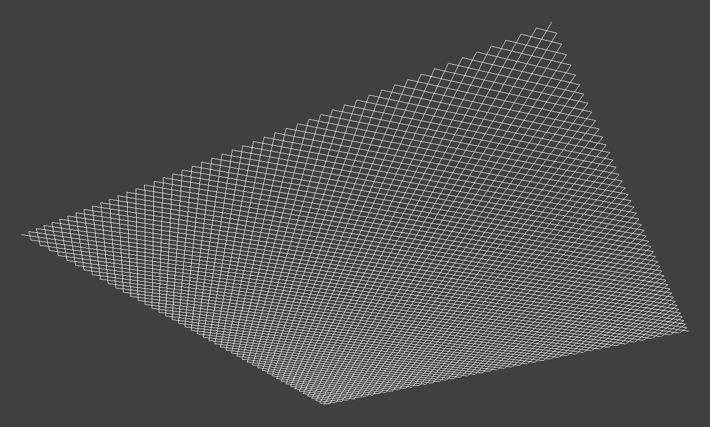
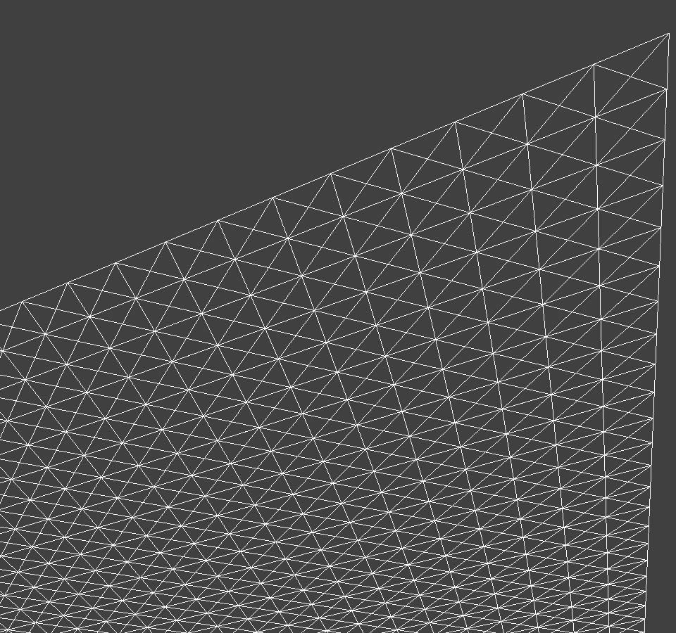
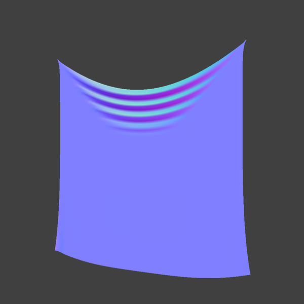
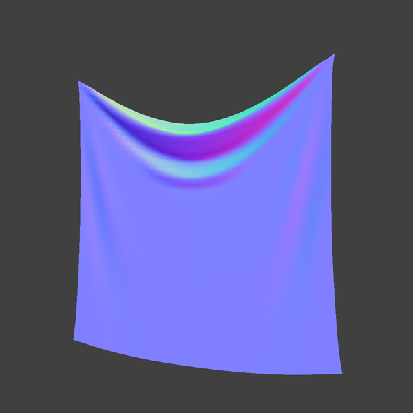
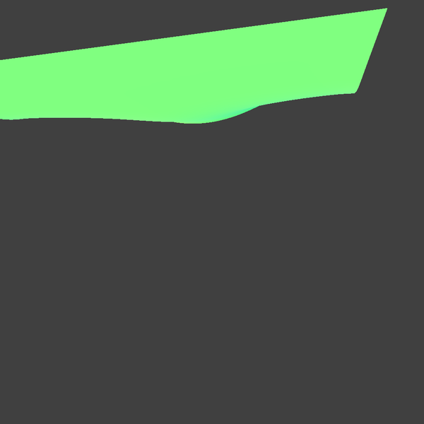
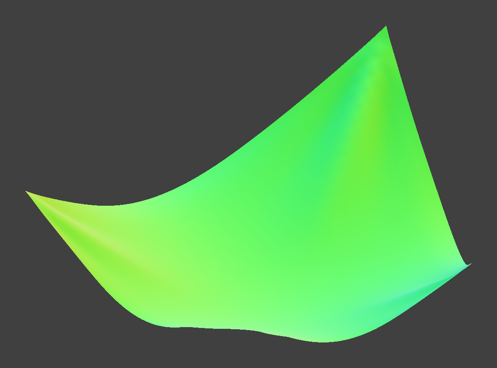
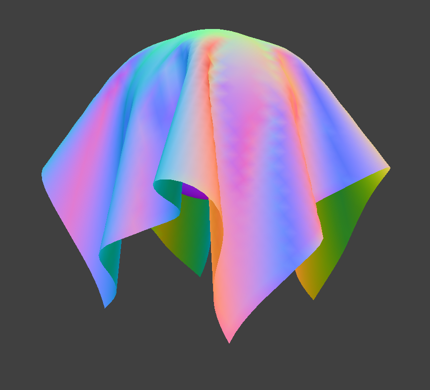

CS184/284A Fall 2026 Homework 4 Write-Up
Link to webpage: cal-cs184-student.github.io/hw4-klk645445-writeup
Link to GitHub repository: github.com/cal-cs184-student/hw4-klk645445
Overview
Give a high-level overview of what you implemented in this homework. Think about what you've built as a whole. Share your thoughts on what interesting things you've learned from completing the homework.Part 1: Masses and springs
The cloth is modelled as a grid of point masses connected by springs. The masses carry the cloth's weight and
position, and the springs hold them together and push back whenever the cloth is stretched, sheared or bent. In
Part 1, I built this grid in Cloth::buildGrid, first creating all of the point masses and then connecting
them with springs.
The cloth has num_width_points \( \times \) num_height_points masses spread evenly over a
width \( \times \) height area. Since the first mass sits at 0 and the last one at the far
edge, there is one gap fewer than there are points, so the spacing between masses is
\[ \Delta x = \frac{\text{width}}{\text{num_width_points} - 1}, \qquad \Delta y = \frac{\text{height}}{\text{num_height_points} - 1}. \]
The mass with grid index \( (x, y) \) is placed depending on the cloth's orientation. A horizontal cloth lies flat at a
height of 1, so its masses are spread over the \( xz \)-plane at \( (x\Delta x,\, 1,\, y\Delta y) \). A vertical cloth
hangs in the \( xy \)-plane at \( (x\Delta x,\, y\Delta y,\, z) \), where \( z \) is a small random offset between
\( -\frac{1}{1000} \) and \( \frac{1}{1000} \). Without this offset the vertical cloth would be perfectly flat, so every
force on it would lie in the same plane and nothing would ever push it out of that plane to make it ripple or fold.
I looped over the rows on the outside and the columns on the inside, so the masses are stored in row-major order and
the mass \( (x, y) \) ends up at index \( y \cdot \text{num_width_points} + x \) of point_masses. The
rendering code relies on this order. For each mass, I also checked whether its \( (x, y) \) index appears in the
pinned list from the scene file. Pinned masses stay fixed in place during the simulation, which is how
the cloth in pinned2.json hangs from two of its corners.
The springs are added in a second pass, only after every mass has been created. Each spring stores pointers to its two masses, and adding masses to the vector while taking pointers into it could make the vector resize and leave those pointers dangling. In the second pass, each mass connects to neighbours that come before it in the grid, so that every pair of masses gets exactly one spring. There are three types of springs, and each one resists a different kind of deformation.
- Structural springs connect a mass to the mass directly to its left and directly above it. They resist the cloth stretching apart.
- Shearing springs connect a mass to the masses diagonally above it on the left and on the right. They stop the square cells of the grid from collapsing into diamonds, which structural springs alone cannot prevent since a sheared cell keeps all of its edge lengths.
- Bending springs connect a mass to the mass two to its left and two above it. They resist the cloth folding sharply, since a crease between three masses in a row brings the two outer masses closer together.
Masses near the edges of the grid have fewer neighbours, so each spring is only added if its neighbour actually exists,
for example only if \( x \ge 1 \) for the structural spring to the left. The rest length of each spring is the distance
between its two masses when it is created, which the Spring constructor computes.
The screenshots below show the wireframe of pinned2.json with different spring types enabled, with the
whole cloth in the top row and a close-up of one corner in the bottom row. Without
shearing springs, the grid is made of plain squares. With only shearing springs, every cell shows an X made of the two
diagonals, and with all of the springs both patterns appear together. Bending springs are hard to see in the wireframe
on their own. Because there is one starting at every mass, their two-cell-long lines overlap and cover the same
segments as the structural springs, so the difference between them only shows up once the cloth starts moving.

|
 |
|

|
|
 |
Part 2: Simulation via numerical integration
With the grid in place, Part 2 makes the cloth move. Cloth::simulate advances the cloth by one small
timestep \( \Delta t \), and the simulator calls it simulation_steps times per frame. Each call has three
stages. It computes the total force on every point mass, uses those forces to move the masses with Verlet integration,
and then corrects any spring that was stretched too far. The mass of each point is the cloth's total mass divided evenly
between the points,
\[ m = \frac{\text{width} \cdot \text{height} \cdot \text{density}}{\text{num_width_points} \cdot \text{num_height_points}}. \]
The first stage starts every mass from zero force. External forces such as gravity are given as accelerations, so I summed them into one acceleration \( \mathbf{a}_{\text{ext}} \) and set each mass's force to \( m\,\mathbf{a}_{\text{ext}} \), which also clears the forces left over from the previous step. Then I added the spring forces. For every spring whose type is enabled in the GUI, Hooke's law gives a force of magnitude \[ F_s = k_s \left( \|\mathbf{p}_b - \mathbf{p}_a\| - l \right), \] where \( l \) is the spring's rest length. The force acts along the spring, so I added \( F_s \) times the unit vector from \( \mathbf{p}_a \) to \( \mathbf{p}_b \) to the first mass and subtracted it from the second. When the spring is stretched, \( F_s \) is positive and the two masses are pulled towards each other, and when it is compressed they are pushed apart. Bending springs use \( 0.2\,k_s \) instead of \( k_s \), since they should resist folding much more weakly than structural and shearing springs resist stretching.
The second stage moves every mass that is not pinned. Verlet integration does not store velocities. It uses the
previous position to estimate how far a mass moved in the last step and keeps it moving that way, then adds the
effect of the current forces,
\[ \mathbf{x}_{t+\Delta t} = \mathbf{x}_t + (1 - d)\,(\mathbf{x}_t - \mathbf{x}_{t-\Delta t}) + \mathbf{a}_t\,\Delta t^2, \]
where \( \mathbf{a}_t \) is the mass's total force divided by \( m \) and \( d \) is the damping. The GUI shows damping as
a percentage, so \( d \) is cp->damping divided by 100. The factor \( 1 - d \) removes a little of the
motion every step, standing in for friction and air resistance. Before overwriting the position, I saved it so that it
becomes last_position for the next step.
The third stage follows Provot's 1995 paper. A single timestep can stretch a spring far more than real cloth would
stretch, especially with a low spring constant or a heavy cloth. After integrating, I looped over every spring again,
and if one was longer than 110% of its rest length, I moved its masses towards each other along the spring until it
was exactly 110% long. The correction is split in half between the two masses, except when one of them is pinned, in
which case the free mass takes the whole correction, and when both are pinned nothing moves. I only change
position and not last_position, so the correction also reduces the velocity that Verlet
infers in the next step.
Effect of the parameters
I ran pinned2.json with one parameter changed at a time and compared the cloth after 450 frames, which is
5 seconds of simulated time. The defaults are \( k_s = 5000 \) N/m, a density of 15 g/cm\( ^2 \) and a damping of 0.2%,
and the screenshots use the normal shader so that the folds are easy to see.
The spring constant \( k_s \) controls how stiff the cloth is. With a very low \( k_s \) of 50, the springs barely resist gravity, so the cloth stretches until the Provot constraint stops it. It hangs lower, and the sagging top edge bunches up into several narrow ripples, because the soft bending springs let the cloth fold at a very small scale. Even after 5 seconds it was still moving slightly. As \( k_s \) increases the ripples merge into one smooth fold, and with a \( k_s \) of 50000 the cloth is so stiff that it barely stretches at all. It hangs the highest, and the curve between the two pinned corners is the shallowest.
|
 |
 |

|

|
Density has the opposite effect. A denser cloth is heavier, so gravity pulls harder on the same springs and the cloth stretches and sags more, while a lighter cloth hangs flatter. In fact, the two parameters are tied together. Gravity gives every mass the same acceleration whatever its mass, while a spring's acceleration is \( F_s / m \), so only the ratio \( k_s / m \) affects the motion. A density of 1.5 g/cm\( ^2 \) produced exactly the same images as a \( k_s \) of 50000, and a density of 150 g/cm\( ^2 \) looks the same as a \( k_s \) of 500. Dividing the density by 10 is equivalent to multiplying \( k_s \) by 10.

|
|
|
Damping controls how quickly the cloth loses energy, so its effect shows up while the cloth is falling rather than at rest. The screenshots below show the cloth 60 and 120 frames after it is released, which is about 0.7 and 1.3 seconds. With no damping, the cloth never loses the energy it gains from falling. It swings past the hanging position, crumples into many small wrinkles and keeps moving chaotically, and it was still moving a lot after 5 seconds. With the default damping of 0.2%, the cloth falls, swings once and settles into a smooth fold. With a damping of 1%, every step removes so much motion that the cloth drifts down slowly, as if it were falling through a thick liquid. After 1.3 seconds most of it is still close to horizontal, while the default cloth is already hanging straight down, and it was still slowly settling after 5 seconds.

|

|
 |

|

|

|
Finally, this is pinned4.json at rest with all of the default parameters, shown with the normal shader. The
cloth is pinned at all four corners, so it sags into a smooth bowl shape between them.

pinned4.json at rest, default parametersPart 3: Handling collisions with other objects
So far nothing stops the cloth from falling through objects in the scene. In Part 3, I added collisions with spheres
and planes. In Cloth::simulate, right after the Verlet step moves the masses and before the Provot
correction, I loop over every point mass and call collide on it for every collision object in the scene.
collide is a virtual function of CollisionObject, so the same loop calls the sphere's or the
plane's version depending on the object. Each version checks whether the mass has ended up somewhere it should not be,
and if so, moves it back to the surface.
Both collisions use the same idea for the final correction. Once I know the point \( \mathbf{t} \) on the surface where
the mass should be, I do not simply move the mass there. Instead, I measure the correction from the mass's position in
the previous step and scale it by \( 1 - f \), where \( f \) is the object's friction,
\[ \mathbf{x}_{\text{new}} = \mathbf{x}_{\text{last}} + (1 - f)\,(\mathbf{t} - \mathbf{x}_{\text{last}}). \]
Because Verlet integration infers velocity from the last two positions, measuring from last_position
removes the velocity that carried the mass into the object. If I only moved position onto the surface,
the mass would keep its velocity into the object and dig back in on the next step. The friction factor makes the mass
cover only part of the distance along the surface, so with higher friction the cloth slides less.
For a sphere with centre \( \mathbf{c} \) and radius \( R \), a mass collides if it is inside the sphere, which is when \( \|\mathbf{x} - \mathbf{c}\| < R \). In that case, the closest point on the surface lies in the same direction from the centre, so the tangent point is \[ \mathbf{t} = \mathbf{c} + R\,\frac{\mathbf{x} - \mathbf{c}}{\|\mathbf{x} - \mathbf{c}\|}, \] and I apply the correction above.
A plane is defined by a point \( \mathbf{p} \) on it and a unit normal \( \mathbf{n} \), and the signed distance of a point
\( \mathbf{x} \) from it is \( d(\mathbf{x}) = (\mathbf{x} - \mathbf{p}) \cdot \mathbf{n} \), which is positive on the side the
normal points to and negative on the other side. A plane has no inside, so instead a mass collides if it crossed the
plane during the last step, which is when \( d(\mathbf{x}) \) and \( d(\mathbf{x}_{\text{last}}) \) have different signs. In
that case, I project the current position straight onto the plane with
\( \mathbf{t} = \mathbf{x} - d(\mathbf{x})\,\mathbf{n} \). A mass placed exactly on the plane could end up on either side due
to rounding, so I offset the target by a tiny SURFACE_OFFSET along the normal, towards the side the mass
came from, before applying the correction.
Results
These screenshots show sphere.json after the cloth has come to rest over the sphere, with three different
spring constants. With a low \( k_s \) of 500, the cloth is soft, so it clings closely to the sphere and hangs almost
straight down, falling into many narrow folds. It also stretches the most, so its corners reach the lowest. With the
default \( k_s \) of 5000, the cloth still drapes over the sphere but holds its shape a little more, with fewer and wider
folds. With a high \( k_s \) of 50000, the cloth is stiff enough to resist bending around the sphere. It flares out
sideways like a skirt, with only a few large folds, and its corners stick out instead of hanging down.

|

|
 |
For plane.json, the cloth falls onto the plane and lies flat on it without sinking through. The left image
uses the normal shader, where the cloth is the lighter green rectangle on top of the plane, and the right image shows
the same moment in wireframe.

|

|